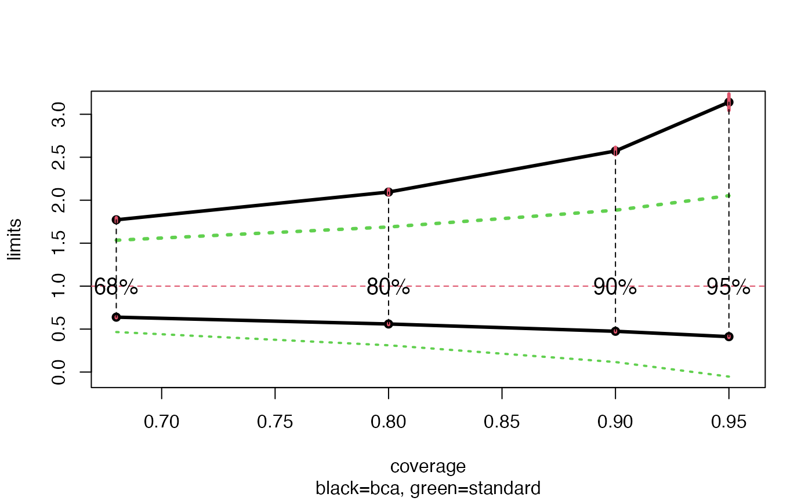

Automatic Construction of Bootstrap Confidence Intervals
Bradley Efron and Balasubramanian Narasimhan
2026-04-07
Source:vignettes/bcaboot.Rmd
bcaboot.RmdIntroduction
Bootstrap confidence intervals depend on three elements:
- the cdf of the bootstrap replications ,
- the bias-correction number where is the original estimate
- the acceleration number that measures the rate of change in as , the data changes.
The first two of these depend only on the bootstrap distribution, and not how it is generated: parametrically or non-parametrically.
Package bcaboot aims to make construction of bootstrap
confidence intervals almost automatic. The three main functions
for the user are:
-
bcajackandbcajack2for nonparametric bootstrap -
bcaparfor parametric bootstrap
Further details are in the Efron and Narasimhan (2018) paper. Much of the theory behind the approach can be found in references Efron (1987), DiCiccio and Efron (1992), DiCiccio and Efron (1996), and Efron and Hastie (2016).
A Nonparametric Example
Suppose we wish to construct bootstrap confidence intervals for an
-statistic
from a linear regression. Using the diabetes data from the lars
(442 by 11) as an example, we use the function below to regress the
y on x, a matrix of of 10 predictors, to
compute
.
data(diabetes, package = "bcaboot")
Xy <- cbind(diabetes$x, diabetes$y)
rfun <- function(Xy) {
y <- Xy[, 11]
X <- Xy[, 1:10]
summary(lm(y ~ X) )$adj.r.squared
}Constructing bootstrap confidence intervals involves merely calling
bcajack:
The result contains several components. The confidence
interval limits can be obtained via
knitr::kable(result$lims, digits = 3)| bca | jacksd | std | pct | |
|---|---|---|---|---|
| 0.025 | 0.435 | 0.003 | 0.443 | 0.006 |
| 0.05 | 0.443 | 0.006 | 0.453 | 0.015 |
| 0.1 | 0.454 | 0.001 | 0.465 | 0.035 |
| 0.16 | 0.464 | 0.002 | 0.474 | 0.065 |
| 0.5 | 0.498 | 0.001 | 0.507 | 0.306 |
| 0.84 | 0.531 | 0.002 | 0.539 | 0.685 |
| 0.9 | 0.540 | 0.002 | 0.548 | 0.778 |
| 0.95 | 0.551 | 0.002 | 0.560 | 0.869 |
| 0.975 | 0.560 | 0.002 | 0.570 | 0.923 |
The first column shows the estimated Bca confidence limits at the
requested alpha percentiles which can be compared with the standard
limits
under the column titled standard. The jacksd
column jacksd gives the internal standard errors for the Bca limits,
quite small in this example. The pct column gives
percentiles of the ordered B bootstrap replications
corresponding to the Bca limits, e.g. the 91.85 percentile equals the
the .975 Bca limit .5600968.
Further details are provided by the stats component.
knitr::kable(result$stats, digits = 3)| theta | sdboot | z0 | a | sdjack | |
|---|---|---|---|---|---|
| est | 0.507 | 0.032 | -0.253 | -0.007 | 0.033 |
| jsd | 0.000 | 0.001 | 0.031 | 0.000 | 0.000 |
The first column theta is the original point estimate of
the parameter of interest, sdboot is its bootstrap estimate
of standard error. The quantity z0 is the Bca bias
correction value, in this case quite negative; a is the
acceleration, a component of the Bca limits (nearly zero here). Finally,
sdjack is the jackknife estimate of standard error for
theta.
The bottom line gives the internal standard errors for the five
quantities above. This is substantial for z0 above.
The component ustats of the result provides the
bias-corrected estimator and an estimate of its sampling error.
| ustat | sdu |
|---|---|
| 0.498 | 0.036 |
The resulting object can be plotted using bcaplot.
bcaplot(result)
A Parametric Example
A logistic regression was fit to data on 812 neonates at a large clinic. Here is a summary of the dataset.
str(neonates)## 'data.frame': 812 obs. of 12 variables:
## $ gest: num -0.729 -0.729 1.156 -2.884 0.348 ...
## $ ap : num 0.856 0.856 0.856 -2.076 0.856 ...
## $ bwei: num -0.694 -0.694 0.786 -2.174 0.786 ...
## $ gen : num 1.227 -0.814 -0.814 1.227 -0.814 ...
## $ resp: num 0.78 -0.939 1.639 1.639 1.639 ...
## $ head: num -0.402 -0.402 -0.402 -0.402 -0.402 ...
## $ hr : num -0.256 -0.256 -0.256 -0.256 -0.256 ...
## $ cpap: num 1.866 -0.535 1.866 1.866 1.866 ...
## $ age : num -0.94 -0.94 -0.94 -0.94 1.06 ...
## $ temp: num -0.669 -0.669 -0.669 -0.669 2.339 ...
## $ size: num 0.484 -1.319 -1.319 0.484 0.484 ...
## $ y : int 1 1 1 1 1 1 1 1 1 1 ...The goal was to predict death versus
survival—
is 1 or 0, respectively—on the basis of 11 baseline variables of which
one of them resp was of particular concern. (There were 207
deaths and 605 survivors.) So here
,
the parameter of interest is the coefficient of resp.
Discussions with the investigator suggested a weighting of 4 to 1 of
deaths versus non-deaths.
A Logistic Model
weights <- with(neonates, ifelse(y == 0, 1, 4))
glm_model <- glm(formula = y ~ ., family = "binomial", weights = weights, data = neonates)
summary(glm_model)##
## Call:
## glm(formula = y ~ ., family = "binomial", data = neonates, weights = weights)
##
## Coefficients:
## Estimate Std. Error z value Pr(>|z|)
## (Intercept) -0.26510 0.07598 -3.489 0.000485 ***
## gest -0.70602 0.13117 -5.383 7.35e-08 ***
## ap -0.78594 0.07874 -9.982 < 2e-16 ***
## bwei -0.23332 0.12592 -1.853 0.063879 .
## gen -0.04107 0.07355 -0.558 0.576594
## resp 0.94306 0.08974 10.509 < 2e-16 ***
## head 0.04813 0.08057 0.597 0.550299
## hr 0.03504 0.07191 0.487 0.626045
## cpap 0.43438 0.08869 4.898 9.70e-07 ***
## age 0.15727 0.08492 1.852 0.064041 .
## temp -0.05960 0.08506 -0.701 0.483520
## size -0.37477 0.09919 -3.778 0.000158 ***
## ---
## Signif. codes: 0 '***' 0.001 '**' 0.01 '*' 0.05 '.' 0.1 ' ' 1
##
## (Dispersion parameter for binomial family taken to be 1)
##
## Null deviance: 1951.7 on 811 degrees of freedom
## Residual deviance: 1187.2 on 800 degrees of freedom
## AIC: 1211.2
##
## Number of Fisher Scoring iterations: 5Parametric bootstrapping in this context requires us to independently
sample the response according to the estimated probabilities from
regression model. As discussed in the paper accompanying this software,
routine bcapar also requires sufficient statistics
where
is the model matrix. Therefore, it makes sense to have a function do the
work. The function glm_boot below returns a list of the
estimate
,
the bootstrap estimates, and the sufficient statistics.
glm_boot <- function(B, glm_model, weights, var = "resp") {
pi_hat <- glm_model$fitted.values
n <- length(pi_hat)
y_star <- sapply(seq_len(B), function(i) ifelse(runif(n) <= pi_hat, 1, 0))
beta_star <- apply(y_star, 2, function(y) {
boot_data <- glm_model$data
boot_data$y <- y
coef(glm(formula = y ~ ., data = boot_data, weights = weights, family = "binomial"))
})
list(theta = coef(glm_model)[var],
theta_star = beta_star[var, ],
suff_stat = t(y_star) %*% model.matrix(glm_model))
}Now we can compute the bootstrap estimates using
bcapar.
set.seed(3891)
glm_boot_out <- glm_boot(B = 2000, glm_model = glm_model, weights = weights)
glm_bca <- bcapar(t0 = glm_boot_out$theta,
tt = glm_boot_out$theta_star,
bb = glm_boot_out$suff_stat)We can examine the bootstrap limits and statistics.
knitr::kable(glm_bca$lims, digits = 3)| bca | jacksd | std | pct | |
|---|---|---|---|---|
| 0.025 | 0.598 | 0.025 | 0.639 | 0.006 |
| 0.05 | 0.655 | 0.019 | 0.688 | 0.016 |
| 0.1 | 0.717 | 0.011 | 0.745 | 0.040 |
| 0.16 | 0.764 | 0.007 | 0.789 | 0.073 |
| 0.5 | 0.913 | 0.004 | 0.943 | 0.333 |
| 0.84 | 1.067 | 0.005 | 1.097 | 0.710 |
| 0.9 | 1.114 | 0.009 | 1.142 | 0.797 |
| 0.95 | 1.168 | 0.008 | 1.198 | 0.880 |
| 0.975 | 1.214 | 0.013 | 1.247 | 0.930 |
knitr::kable(glm_bca$stats, digits = 3)| theta | sd | a | az | z0 | A | sdd | mean | |
|---|---|---|---|---|---|---|---|---|
| est | 0.943 | 0.155 | -0.019 | -0.001 | -0.215 | 0.006 | 0.129 | 0.982 |
| jsd | 0.000 | 0.002 | 0.007 | 0.010 | 0.027 | 0.025 | 0.005 | 0.004 |
Our bootstrap standard error using
samples for resp can be read off from the last table as
.
We can also see a small upward bias from the fact that 0.585 proportion
of bootstrap replicates were above
.
This is also reflected in the bias-corrector term
in the table above with an internal standard error of $0.024.
A Penalized Logistic Model
Now suppose we wish to use a nonstandard estimation procedure, for
example, via the glmnet package, which uses
cross-validation to figure out a best fit, corresponding to a
penalization parameter
(named lambda.min).
X <- as.matrix(neonates[, seq_len(11)]) ; Y <- neonates$y;
glmnet_model <- glmnet::cv.glmnet(x = X, y = Y, family = "binomial", weights = weights)We can examine the estimates at the lambda.min as
follows.
coefs <- as.matrix(coef(glmnet_model, s = glmnet_model$lambda.min))
knitr::kable(data.frame(variable = rownames(coefs), coefficient = coefs[, 1]), row.names = FALSE, digits = 3)| variable | coefficient |
|---|---|
| (Intercept) | -0.212 |
| gest | -0.540 |
| ap | -0.687 |
| bwei | -0.268 |
| gen | 0.000 |
| resp | 0.870 |
| head | 0.000 |
| hr | 0.000 |
| cpap | 0.382 |
| age | 0.050 |
| temp | 0.000 |
| size | -0.221 |
Following the lines above, we create a helper function to perform the bootstrap.
glmnet_boot <- function(B, X, y, glmnet_model, weights, var = "resp") {
lambda <- glmnet_model$lambda.min
theta <- as.matrix(coef(glmnet_model, s = lambda))
pi_hat <- predict(glmnet_model, newx = X, s = "lambda.min", type = "response")
n <- length(pi_hat)
y_star <- sapply(seq_len(B), function(i) ifelse(runif(n) <= pi_hat, 1, 0))
beta_star <- apply(y_star, 2,
function(y) {
as.matrix(coef(glmnet::glmnet(x = X, y = y, lambda = lambda, weights = weights, family = "binomial")))
})
rownames(beta_star) <- rownames(theta)
list(theta = theta[var, ],
theta_star = beta_star[var, ],
suff_stat = t(y_star) %*% X)
}And off we go.
glmnet_boot_out <- glmnet_boot(B = 2000, X, y, glmnet_model, weights)
glmnet_bca <- bcapar(t0 = glmnet_boot_out$theta,
tt = glmnet_boot_out$theta_star,
bb = glmnet_boot_out$suff_stat)We can compare the output of this against what we got from
glm above.
We can examine the bootstrap limits and statistics.
knitr::kable(glmnet_bca$lims, digits = 3)| bca | jacksd | std | pct | |
|---|---|---|---|---|
| 0.025 | 0.671 | 0.008 | 0.614 | 0.128 |
| 0.05 | 0.715 | 0.004 | 0.655 | 0.206 |
| 0.1 | 0.757 | 0.006 | 0.702 | 0.325 |
| 0.16 | 0.799 | 0.005 | 0.740 | 0.434 |
| 0.5 | 0.926 | 0.005 | 0.870 | 0.797 |
| 0.84 | 1.047 | 0.011 | 1.000 | 0.966 |
| 0.9 | 1.092 | 0.015 | 1.037 | 0.982 |
| 0.95 | 1.137 | 0.016 | 1.084 | 0.993 |
| 0.975 | 1.172 | 0.028 | 1.126 | 0.997 |
knitr::kable(glmnet_bca$stats, digits = 3)| theta | sd | a | az | z0 | A | sdd | mean | |
|---|---|---|---|---|---|---|---|---|
| est | 0.87 | 0.131 | -0.003 | -0.025 | 0.415 | -0.011 | 0.104 | 0.818 |
| jsd | 0.00 | 0.002 | 0.010 | 0.012 | 0.023 | 0.034 | 0.004 | 0.003 |
The shrinkage is evident; we now have the bootstrap estimate is now . In fact, we now have only 0.339 proportion of bootstrap replicates above . Therefore, the bias corrector is large:
Finally, we can plot both the glm and
glmnet results side-by-side.

Ratio of Independent Variance Estimates
Assume we have two independent estimates of variance from normal theory:
and
Suppose now that our parameter of interest is
for which we wish to compute confidence limits. In this setting, theory yields exact limits:
We can apply bcapar to this problem. As before, here are
our helper functions.
ratio_boot <- function(B, v1, v2) {
s1 <- sqrt(v1) * rchisq(n = B, df = n1) / n1
s2 <- sqrt(v2) * rchisq(n = B, df = n2) / n2
theta_star <- s1 / s2
beta_star <- cbind(s1, s2)
list(theta = v1 / v2,
theta_star = theta_star,
suff_stat = beta_star)
}
funcF <- function(beta) {
beta[1] / beta[2]
}Note that we have an additional function funcF which
corresponds to
in the paper. This is the function expressing the parameter of interest
as as a function of the sample.
B <- 16000; n1 <- 10; n2 <- 42
ratio_boot_out <- ratio_boot(B, 1, 1)
ratio_bca <- bcapar(t0 = ratio_boot_out$theta,
tt = ratio_boot_out$theta_star,
bb = ratio_boot_out$suff_stat, func = funcF)The limits obtained are shown below, along with the exact limits as the last column.
exact <- 1 / qf(df1 = n1, df2 = n2, p = 1 - as.numeric(rownames(ratio_bca$lims)))
knitr::kable(cbind(ratio_bca$lims, exact = exact), digits = 3)| bca | jacksd | std | pct | abc | exact | |
|---|---|---|---|---|---|---|
| 0.025 | 0.412 | 0.008 | -0.053 | 0.068 | 0.405 | 0.422 |
| 0.05 | 0.475 | 0.007 | 0.117 | 0.103 | 0.472 | 0.484 |
| 0.1 | 0.559 | 0.007 | 0.312 | 0.164 | 0.562 | 0.570 |
| 0.16 | 0.639 | 0.006 | 0.466 | 0.228 | 0.646 | 0.650 |
| 0.5 | 1.046 | 0.006 | 1.000 | 0.570 | 1.057 | 1.053 |
| 0.84 | 1.772 | 0.025 | 1.534 | 0.903 | 1.813 | 1.800 |
| 0.9 | 2.095 | 0.032 | 1.688 | 0.953 | 2.154 | 2.128 |
| 0.95 | 2.573 | 0.043 | 1.883 | 0.985 | 2.726 | 2.655 |
| 0.975 | 3.141 | 0.096 | 2.053 | 0.996 | 3.416 | 3.247 |
Clearly the bca limits match the exact values very well and suggests a large upward correction to the standard limits. Here the corrections are all positive as seen in the table below; and .
knitr::kable(ratio_bca$stats, digits = 3)| theta | sd | a | az | z0 | A | sdd | mean | |
|---|---|---|---|---|---|---|---|---|
| est | 1 | 0.537 | 0.098 | 0.089 | 0.088 | 0.509 | 0.504 | 1.054 |
| jsd | 0 | 0.005 | 0.005 | 0.005 | 0.010 | 0.020 | 0.004 | 0.004 |
| a | z0 |
|---|---|
| 0.1 | 0.1 |
knitr::kable(ratio_bca$ustats, digits = 3)| ustat | sdu | B | |
|---|---|---|---|
| est | 0.946 | 0.490 | 16000 |
| jsd | 0.004 | 0.004 | 0 |
The plot below shows that there is moderate amount of internal error
in
as shown by the red bar. The pct column suggests why:
occurs at the
-quantile
of the 16,000 replications, i.e., at the 64th largest
,
where there is a limited amount of data for estimating the
distribution.
bcaplot(ratio_bca)